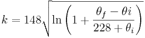

Principles of Cable Sizing
1. Introduction
Cable (or conductor) sizing is the process of selecting appropriate sizes for electrical power cable conductors. Cable sizes are typically decribed in terms of cross-sectional area, American Wire Gauge (AWG) or kcmil, depending on geographic region.
The proper sizing of cables is important to ensure that the cable can:
- Operate continuously under full load without being damaged
- Provide the load with a suitable voltage (and avoid excessive voltage drops)
- Withstand the worst short circuits currents flowing through the cable
Cable sizing methods do differ across international standards (e.g. IEC, NEC, BS, etc) and some standards emphasise certain things over others. However the general principles that underpin all cable sizing calculation do not change. When sizing a cable, the following general process is typically followed:
- Gather data about the cable, its installation conditions, the load that it will carry, etc
- Determine the minimum cable size based on ampacity (continuous current carrying capacity)
- Determine the minimum cable size based on voltage drop considerations
- Determine the minimum cable size based on short circuit temperature rise
- Select the cable based on the highest of the sizes calculated in the steps above
2. Data Gathering
The first step is to collate the relevant information that is required to perform the sizing calculation. Typically, you will need to obtain the following data:
(1) Basic cable data - the basic characteristics of the cable's physical construction, which includes:
- Conductor material - e.g. copper or aluminium
- Insulation or cable type - e.g. PVC, XLPE, EPR (for IEC cables), TW, THHW, XHH, etc (for NEC cables)
- Number of cores - single core or multicore (e.g. 2C, 3C or 4C)
(2) Load data - the characteristics of the load that the cable will supply, which includes:
- Number of phases, e.g. three phase or single phase
- System / source voltage
- Full load current (A) - or calculate this if the load is defined in terms of power (kW)
- Full load power factor (pu)
- Distance / length of cable run from source to load - this length should be as close as possible to the actual route of the cable and include enough contingency for vertical drops / rises and termination of the cable tails
(3) Cable installation - how the cable will be installed, which includes:
- Installation method - e.g. cable tray / ladder, in conduit / raceways, against a wall, in air, directly buried, etc
- Ambient or soil temperature at the installation site
- Cable grouping, i.e. the number of other cables that are bunched together or installed in the same area
- Cable spacing, i.e. whether cables are installed touching or spaced
- Soil thermal resistivity (for underground cables)
- For single core three-phase cables, are the cables installed in trefoil or laid flat?
3. Cable Selection Based on Ampacity
Current flowing through a cable generates heat through the resistive losses in the conductors, dielectric losses through the insulation and resistive losses from current flowing through any cable screens / shields and armouring.
A cable's constituent parts (particularly the insulation) must be capable of withstanding the temperature rise and heat emanating from the cable. The ampacity of a cable is the maximum current that can flow continuously through a cable without damaging the insulation. It is sometimes also referred to as the continuous current rating or current carrying capacity of a cable.
Cables with larger conductor cross-sectional areas (i.e. more copper or aluminium) have lower resistive losses and are able to dissipate the heat better than smaller cables. Therefore a 16 mm2 (or 6 AWG) cable will have a higher ampacity than a 4 mm2 (or 12 AWG) cable.
3.1 Base Ampacities
International standards and manufacturers of cables will quote base ampacities for specific types of cable constructions (e.g. copper conductor, PVC insulated, 0.6/1kV voltage grade, etc) and a base set of installation conditions (e.g. ambient temperature of 40°C, installation in conduit / raceways, etc). It is important to note that these ampacities are only valid for the quoted types of cables and base installation conditions.
3.2 Installed / Derated Ampacities
When the proposed installation conditions differ from the base conditions, derating (or correction) factors can be applied to the base ampacities to obtain the actual installed current ratings.
International standards and cable manufacturers will provide derating factors for a range of installation conditions, for example ambient / soil temperature, grouping or bunching of cables, soil thermal resistivity, etc. The installed current rating is calculated by multiplying the base current rating with each of the derating factors, i.e.
where Ic is the installed / derated ampacity of the cable (A)
Ib is the base cable ampacity (A)
kd are the product of all the derating factors
For example, suppose a cable had an ambient temperature derating factor of kamb = 0.94 and a grouping derating factor of kg = 0.85, then the overall derating factor kd = 0.94x0.85 = 0.799. For a cable with a base ampacity of 42A, the installed / derated ampacity would be Ic = 0.799x42 = 33.6A.
4. Cable Selection Based on Voltage Drop
A cable's conductor can be seen as an impedance and as a result, whenever current flows through a cable, there will be a voltage drop across it, derived by Ohm's Law (i.e. V = IZ). The voltage drop will depend on two things:
- Current flow through the cable - the higher the current flow, the higher the voltage drop
- Impedance of the conductor - the larger the impedance, the higher the voltage drop
The impedance of the cable is a function of the cable size (cross-sectional area) and the length of the cable. Most cable manufacturers will quote a cable's resistance and reactance in Ohms/km or Ohms/ft.
For AC systems, the method of calculating voltage drops based on load power factor is commonly used. Full load currents are normally used, but if the load has high startup currents (e.g. motors), then voltage drops based on starting current (and power factor if applicable) should also be calculated.
For a three phase system:
For a single phase system:
Where V is the three phase or single phase voltage drop (V)
I is the nominal full load or starting current as applicable (A)
Rc is the ac resistance of the cable (Ohms/km or Ohms/ft)
Xc is the ac reactance of the cable (Ohms/km or Ohms/ft)
\cos\phi is the load power factor (pu)
L is the length of the cable (m or ft)
When sizing cables for voltage drop, a maximum voltage drop is specified, and then the smallest cable size that meets the voltage drop constraint is selected. For example, suppose a 5% maximum voltage drop is specified. 16mm2, 25mm2 and 35mm2 cables have calculated voltage drops of 6.4%, 4.6% and 3.2% respectively. The 25mm2 cable is selected as it is the smallest cable that fulfils the maximum voltage drop criteria of 5%.
Maximum voltage drops are typically specified because load consumers (e.g. appliances) will have an input voltage tolerance range. This means that if the voltage at the appliance is lower than its rated minimum voltage, then the appliance may not operate correctly.
In general, most electrical equipment will operate normally at a voltage as low as 80% nominal voltage. For example, if the nominal voltage is 230VAC, then most appliances will run at >184VAC. Cables are typically sized for a more conservative maximum voltage drop, in the range of 5 to 10% at full load.
5. Cable Selection Based on Short Circuit Temperature Rise
Note that short circuit temperature rise is not required for cable sizing to NEC standards.
During a short circuit, a high amount of current can flow through a cable for a short time. This surge in current flow causes a temperature rise within the cable. High temperatures can trigger unwanted reactions in the cable insulation, sheath materials and other components, which can prematurely degrade the condition of the cable. As the cross-sectional area of the cable increases, it can dissipate higher fault currents for a given temperature rise. Therefore, cables should be sized to withstand the largest short circuit that it is expected to see.
The minimum cable size due to short circuit temperature rise is typically calculated with an equation of the form:
Where A is the minimum cross-sectional area of the cable (mm2)
i is the prospective short circuit current (A)
t is the duration of the short circuit (s)
k is a short circuit temperature rise constant
The temperature rise constant is calculated based on the material properties of the conductor and the initial and final conductor temperatures. IEC 60364-5-54 calculates it as follows:
For copper cables: 
For aluminium cables: 
Where \thetai and \thetaf are the initial and final conductor temperatures respectively.
As a rough guide, the following temperatures are common for the different insulation materials:
| Material | Max Operating Temperature oC | Limiting Temperature oC |
|---|---|---|
| PVC | 75 | 160 |
| EPR | 90 | 250 |
| XLPE | 90 | 250 |